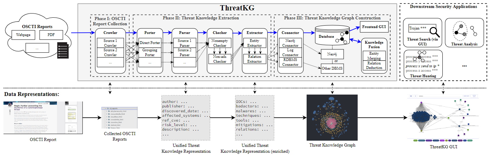

ThreatKG consists of three phases: (1) OSCTI report collection, (2) threat knowledge extraction, and (3) threat knowledge graph construction. Each phase consists of one or several processing steps (e.g., Parser, Extractor).

OSCTI Report Parsing.
Once the crawlers collect the OSCTI reports, the porters group multi-page report files. The parsers are source- dependent; each parser parses the specific layout structure of the corresponding OSCTI source and converts the report files into unified threat knowledge representations (UTKRs).
Threat Relevance Checking.
ThreatKG employs a set of checkers that operate on the UTKRs produced by the parsers and filter out reports that are irrelevant to cyber threats. The filtered UTKRs are then passed to the extractors for further enrichment.
Threat Knowledge Entity Extraction.
We construct a set of regex rules to extract IOCs. For other types of entities, ThreatKG employs a DL-based extractor to perform neural NER.
Threat Knowledge Relation Extraction.
Dependency parsing-based RE and Neural RE are used to extract relations that capture both low-level threat behaviors and high-level threat contexts.
Data Programming.
We leverage data programming, which programmatically synthesizes annotations via unsupervised modeling of sources of weak supervision.
Threat Knowledge Graph Construction.
ThreatKG constructs the threat knowledge graph from the UTKRs and stores it into the backend database for persistence.
Scalability and Extensibility.
To make the system scalable, we parallelize the system components for the processing steps (e.g., crawlers, parsers, checkers, extractors). To make the system extensible, we adopt a modular design, allowing multiple system components in the same processing step to work together with the same input/output interface.
Continuous Knowledge Integration.
To provide the latest threat knowledge timely, ThreatKG is fully automated and continuously running, with new reports being collected and new knowledge being extracted and integrated into the threat knowledge graph.
To facilitate threat search and knowledge graph exploration, we built a web GUI using React and Elasticsearch. The GUI interacts with the Neo4j database and provides various types of interactivity.
Peng Gao, Xiaoyuan Liu, Edward Choi, Bhavna Soman, Chinmaya Mishra, Kate Farris, Dawn Song
SIGMOD 2021 Demo. (Virtual) Xi'an, Shaanxi, China (June 20 - June 25, 2021).
To remain aware of the fast-evolving cyber threat landscape, open-source Cyber Threat Intelligence (OSCTI) has received growing attention from the community. Commonly, knowledge about threats is presented in a vast number of OSCTI reports. Despite the pressing need for high-quality OSCTI, existing OSCTI gathering and management platforms, however, have primarily focused on isolated, low-level Indicators of Compromise. On the other hand, higher-level concepts (e.g., adversary tactics, techniques, and procedures) and their relationships have been overlooked, which contain essential knowledge about threat behaviors that is critical to uncovering the complete threat scenario.
To bridge the gap, we propose ThreatKG, a system for automated OSCTI gathering and management. ThreatKG collects OSCTI reports from various sources, uses a combination of AI and NLP techniques to extract high-fidelity knowledge about threat behaviors, and constructs a security knowledge graph. ThreatKG also provides a UI that supports various types of interactivity to facilitate knowledge graph exploration.
Peng Gao, Xiaoyuan Liu, Edward Choi, Sibo Ma, Xinyu Yang, Zhengjie Ji, Zilin Zhang, Dawn Song
arXiv. 2022.
Despite the increased adoption of open-source cyber threat intelligence (OSCTI) for acquiring knowledge about cyber threats, little effort has been made to harvest knowledge from a large number of unstructured OSCTI reports available in the wild (e.g., security articles, threat reports). These reports provide comprehensive threat knowledge in a variety of entities (e.g., IOCs, threat actors, TTPs) and relations, which, however, are hard to gather due to diverse report formats, large report quantities, and complex structures and nuances in the natural language report text.
To bridge the gap, we propose ThreatKG, a system for automated open-source cyber threat knowledge gathering and management. ThreatKG automatically collects a large number of OSCTI reports from various sources, extracts high-fidelity threat knowledge, constructs a threat knowledge graph, and updates the knowledge graph by continuously ingesting new knowledge. To address multiple challenges, ThreatKG provides: (1) a hierarchical ontology for modeling a variety of threat knowledge entities and relations; (2) an accurate deep learning based pipeline for threat knowledge extraction; (3) a scalable and extensible system architecture for threat knowledge graph construction, persistence, updating, and exploration. Evaluations on a large number of reports demonstrate the effectiveness of ThreatKG in threat knowledge gathering and management.
Virginia Tech
UC Berkeley
UC Berkeley
UC Berkeley
Virginia Tech
Virginia Tech
SJTU
UC Berkeley